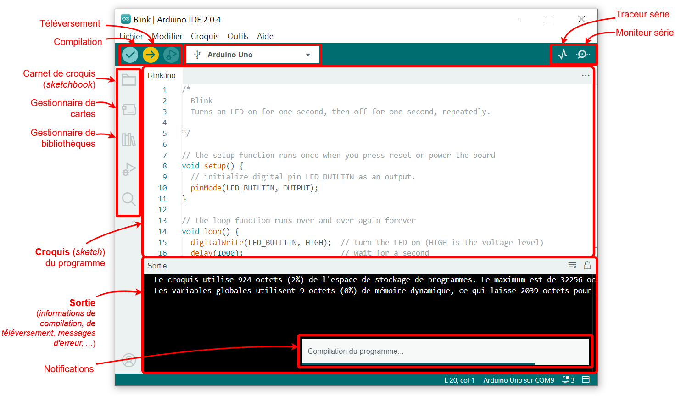
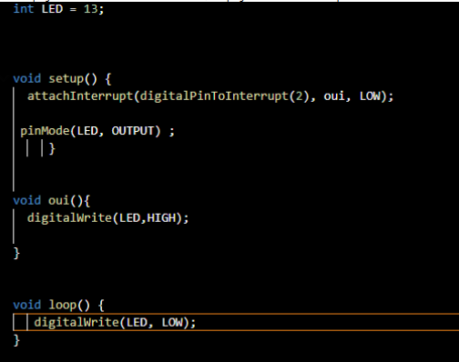
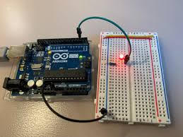
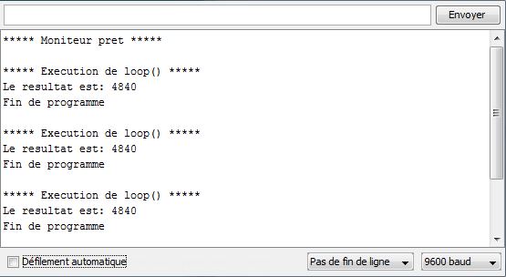
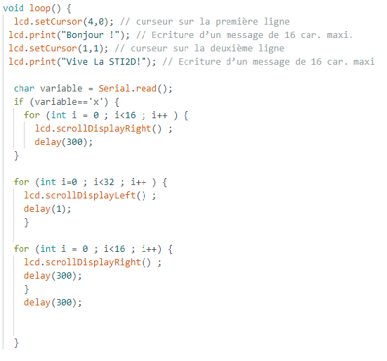

Arduino c'est quoi ?
Tirant son nom d'un bar en Italie (oui cela m'a aussi étonné), Arduino est une platforme permettant de créer des objets techniques . La carte vendu par l'entreprise a un microcontroleur programmale et surtout d'un logiciel de développement fourni avec (IDE) qui permet de coder facilement sans passer par 10 000 logiciels comme cela pourrait l'etre avec d'autres microcontroleur

Le Logiciel Arduino
Le logiciel Arduino, également appelé l'IDE (Integrated Development Environment), est ce qui est utilisé pour programme les carte . Le langage utilisé c'est le C/C++, et le logiciel permet de tranférer les codes de façon simples avec juste une connexion en USB
Pourquoi cela m'intéresse ?
Arduino m'intéresse car c'est un moyen de faire des système numérique de façon simple et accessible.
Cela m'apprend également le codage C++ de façn plutot simple et intuitive
Les Interruptions en Arduino
les interruptions sont un bout de code qui permet d'arreter pour un petit moment l'exécution du programme principal pour en lancer un autre. C'est utile parce que ça permet de gagner de l'espace dans le code et surtout de l'optimiser. Comment ? Car cela permet de ne pas vérifier tout le temps l'état d'un capteur / interrupteur, ce qui "décharge" la carte Arduino
Ci-dessous , voici un exemple d'un code simple permettant que, quand on appuie sur un bouton, les feux de signalisations passent au rouge et les led passent au vert(simulation d'un croisement routier)
 Le Moniteur Série
Le moniteur série est un outil intégré dans l'IDE Arduino qui permet de communiquer avec la carte Arduino via le port USB. Il permet d'envoyer et de recevoir des données entre l'Arduino et l'ordinateur. C'est pratique parce que c'est un moyen simple de recevoir ou envoyer des informations des capteurs et panneau.
Ci-dessous se trouve un bout de code qui utilise le moniteur série afin de controler le coté de défilement d'un texte s'affichant sur un écran LCD
